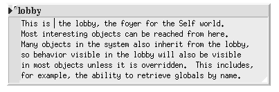

Naming objects
 path from the lobby. |
Naming objectsYou may have noticed that all the objects we created were labelled simply 'an object', whereas traits clonable was labelled as such. How do objects in Self get names?In Self, an object is named by a path. A path is a sequence of data slots we must traverse to get to the object. The path starts at a special object, known as the lobby. (Most objects ultimately inherit from the lobby, but they do not have to). We can summon the lobby from an evaluator. The small button between the expander and the name denotes that there is an object comment. We can view the comment by clicking the button. There may be none, one or many paths to an object from the lobby. If there are none it does not have a global name. For an object to be well-known, there must be at least one path to the object from the lobby. Furthermore, one path must be designated as the creator path to distinguish it from the other paths. We will go into more detail about this later, but for now it is sufficient to say that we must set a creator path for an object for it to have a name. Let's install our bank and stock accounts so that they are well-known.
|